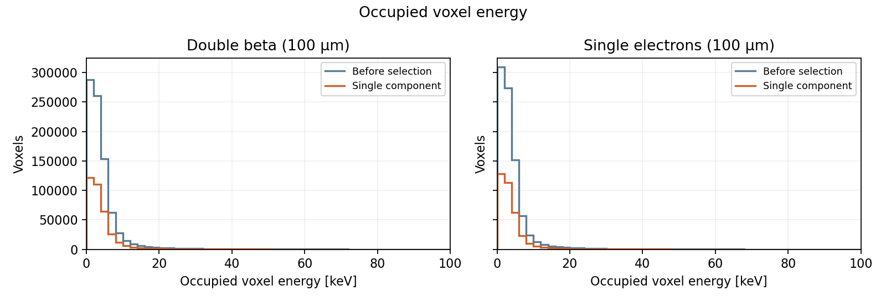
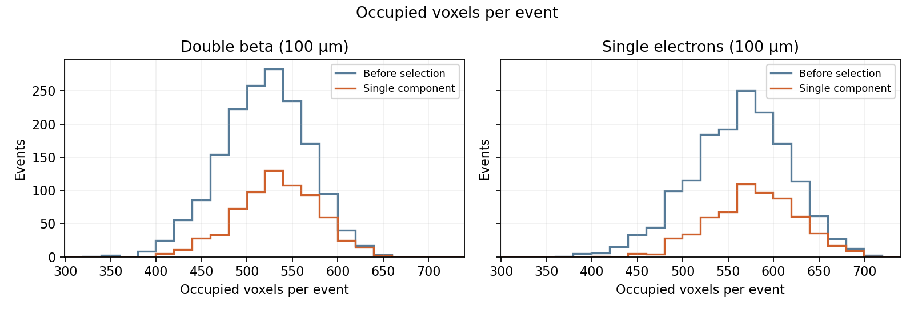
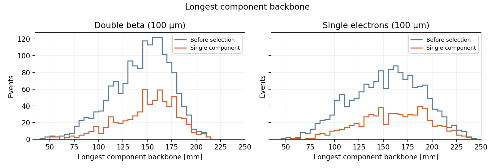
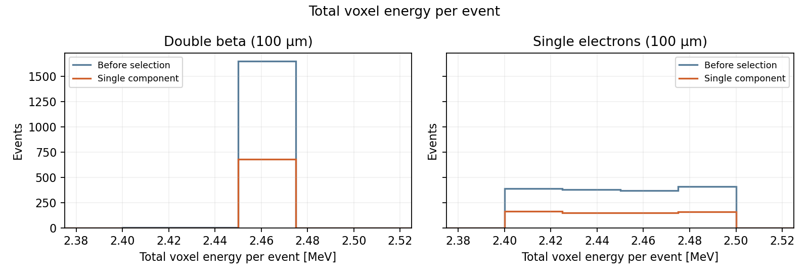
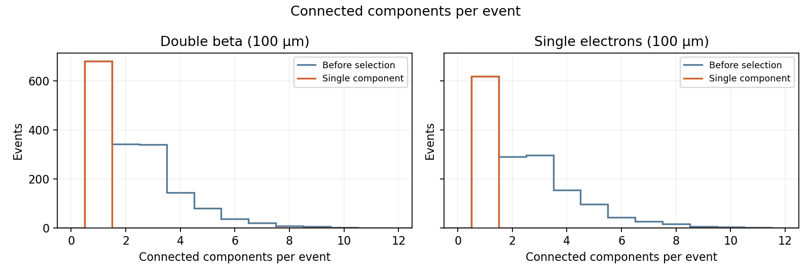
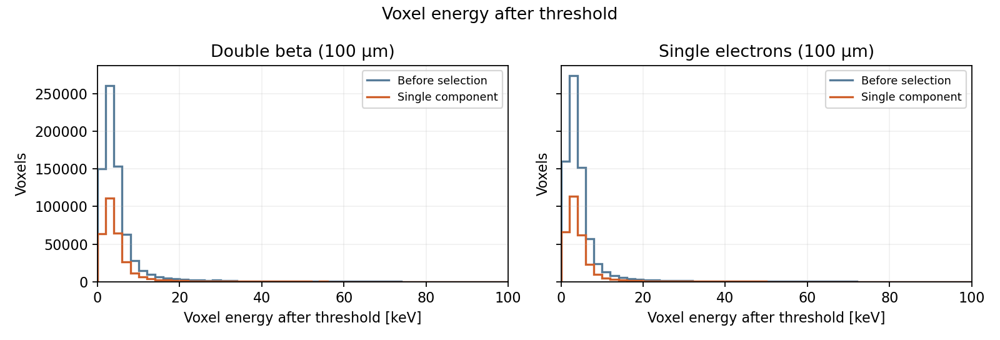
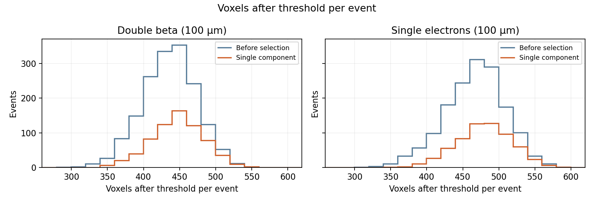
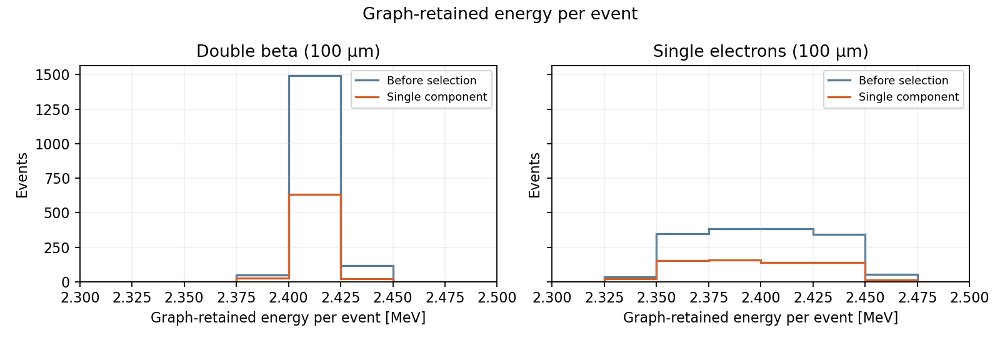
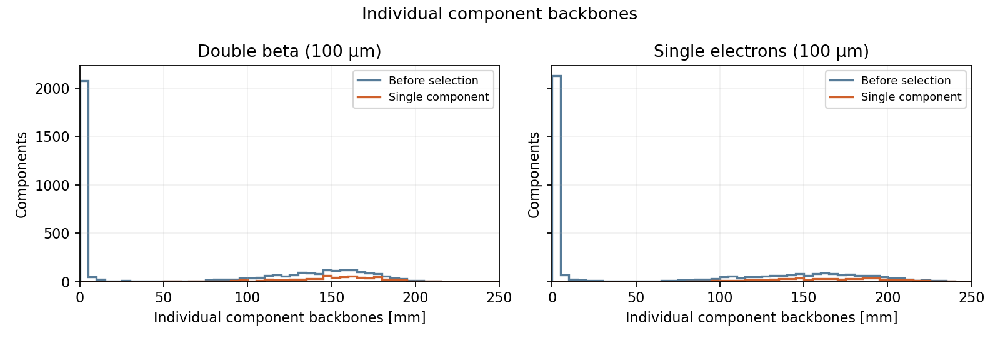

Requested 5,000 catalogue events per sample; processed 1,657 double-beta and 1,552 electron events (limited by available input events). Independent samples, no event matching. Source coordinates, all particles, no diffusion or fiducial cut. Voxel threshold is inclusive and precedes graph construction. Accept exactly one connected component, including a one-node component. Event track length is the longest component backbone. Voxel-energy and component-length histograms pool entries over events; all other histograms have one entry per event. After-selection histograms use the same quantities and bins as before selection. Efficiencies include binomial standard errors and z=1 Wilson intervals. Float32 is used for physical reductions; saved Float64 sums provide independent precision references. Timing excludes initial Julia startup from serial warm-up; warm-up uses one event. Parallel uses two separate Julia processes with owned HDF5 readers, warmed behind a start barrier. Parallel batch time includes dispatch, reading, calculation and shard writing. Parallel total additionally includes process startup and warm-up. Each sample is benchmarked serial first; OS caches may favour the subsequent parallel run. Numerical output is the serial reference.
distance_mode = voxel_multiple; distance_voxel_multiple = 2.5; energy_threshold_keV = 1.0; k = 10; max_distance_mm = 1.25; method = KDT; voxel_width_mm = 0.5
| Sample | Processed | Accepted | Efficiency [%] | Wilson 68% [%] |
|---|---|---|---|---|
| Double beta (100 μm) | 1657 | 680 | 41.0 ± 1.2 | [39.8, 42.3] |
| Single electrons (100 μm) | 1552 | 619 | 39.9 ± 1.2 | [38.6, 41.1] |
| Sample | Serial warm-up [s] | Read [s] | Analysis [s] | Serial batch [s] | 2-process batch [s] | Process startup + warm-up [s] | Parallel total [s] |
|---|---|---|---|---|---|---|---|
| Double beta (100 μm) | 3.003 | 2.487 | 4.333 | 6.824 | 3.998 | 5.931 | 9.929 |
| Single electrons (100 μm) | 0.005 | 2.118 | 4.239 | 6.357 | 3.772 | 5.933 | 9.705 |
| Sample | Max energy closure [keV] | Max voxel error vs Float64 [keV] | Serial/parallel identical |
|---|---|---|---|
| Double beta (100 μm) | 0.000954 | 0.000734 | True |
| Single electrons (100 μm) | 0.000954 | 0.000772 | True |

Double beta (100 μm): before under/overflow 0/0, after 0/0; Single electrons (100 μm): before under/overflow 0/0, after 0/0

Double beta (100 μm): before under/overflow 0/0, after 0/0; Single electrons (100 μm): before under/overflow 0/0, after 0/0

Double beta (100 μm): before under/overflow 0/0, after 0/0; Single electrons (100 μm): before under/overflow 0/0, after 0/0

Double beta (100 μm): before under/overflow 0/0, after 0/0; Single electrons (100 μm): before under/overflow 0/0, after 0/0

Double beta (100 μm): before under/overflow 0/0, after 0/0; Single electrons (100 μm): before under/overflow 0/0, after 0/0

Double beta (100 μm): before under/overflow 0/0, after 0/0; Single electrons (100 μm): before under/overflow 0/0, after 0/0

Double beta (100 μm): before under/overflow 0/0, after 0/0; Single electrons (100 μm): before under/overflow 0/0, after 0/0

Double beta (100 μm): before under/overflow 0/0, after 0/0; Single electrons (100 μm): before under/overflow 0/0, after 0/0

Double beta (100 μm): before under/overflow 0/0, after 0/0; Single electrons (100 μm): before under/overflow 0/0, after 0/0